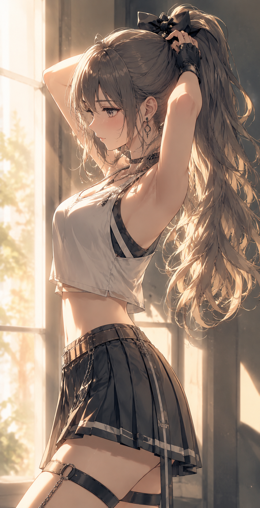

← Archive
0019
Positive Prompt
(masterpiece), (best quality), (ultra detailed), highly detailed anime illustration, beautiful young woman, calm expression, glossy eyes, subtle blush, delicate feminine face, slim figure, long ponytail with soft gradients, silky flowing hair strands, side bangs, wearing a sleeveless crop top, pleated mini skirt, thigh straps, black fingerless glove, modern street fashion, stylish casual outfit, graceful feminine silhouette, dynamic pose adjusting ponytail, side profile composition, soft indoor sunset lighting, large window background, cinematic shadows, warm rim light, minimal modern atmosphere, clean composition, soft ambient glow, peaceful mood, elegant silhouette emphasis, painterly anime rendering, watercolor-like shading, thin clean lineart, soft gradients, delicate highlights, refined shadow transitions, atmospheric illustration style, highly rendered hair details, pixiv featured artwork, professional Japanese illustrator aesthetic, modern anime illustration style, Korean webtoon vibe, stylish vtuber aesthetic, light novel cover art, premium gacha game illustration style, delicate painterly highlights, trending on pixiv, artstation quality
Negative Prompt
negative prompt: (low quality, blurry, bad anatomy, extra fingers, extra limbs, malformed hands, poorly drawn face, duplicated limbs, rough sketch, flat colors, watermark, logo, text, jpeg artifacts, realistic photo, 3d rendering)
Positive Prompt (masterpiece), (best quality), (ultra detailed), highly detailed anime illustration, beautiful young woman, calm expression, glossy eyes, subtle blush, delicate feminine face, slim figure, long ponytail with soft gradients, silky flowing hair strands, side bangs, wearing a sleeveless crop top, pleated mini skirt, thigh straps, black fingerless glove, modern street fashion, stylish casual outfit, graceful feminine silhouette, dynamic pose adjusting ponytail, side profile composition, soft indoor sunset lighting, large window background, cinematic shadows, warm rim light, minimal modern atmosphere, clean composition, soft ambient glow, peaceful mood, elegant silhouette emphasis, painterly anime rendering, watercolor-like shading, thin clean lineart, soft gradients, delicate highlights, refined shadow transitions, atmospheric illustration style, highly rendered hair details, pixiv featured artwork, professional Japanese illustrator aesthetic, modern anime illustration style, Korean webtoon vibe, stylish vtuber aesthetic, light novel cover art, premium gacha game illustration style, delicate painterly highlights, trending on pixiv, artstation quality Negative Prompt negative prompt: (low quality, blurry, bad anatomy, extra fingers, extra limbs, malformed hands, poorly drawn face, duplicated limbs, rough sketch, flat colors, watermark, logo, text, jpeg artifacts, realistic photo, 3d rendering)